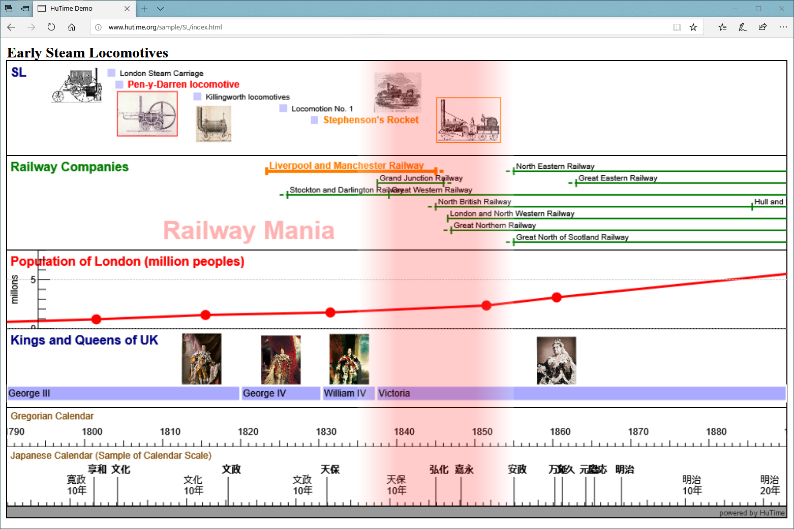

Time Information System, HuTime — A Visualization and Analysis Tool for Chronological Information of Humanities
Tatsuki Sekino, International Research Center for Japanese Studies
In Digital Humanities, events relating to persons, documents or art works are often reproduced on a computer and compared between them chronologically. Despite these needs, software tools that is available for chronological information from humanities are limited. HuTime is a visualization and analysis tool specialized in the chronological information of humanities.

Figure 1: Example of visualizing chronological data1. HuTime has functions to insert images into a timeline and to decorate fonts.
Purpose of HuTime
The time information system, HuTime, aims at providing an environment that includes functions and operations equivalent to geographic information systems for analyzing chronological information (Sekino 2009). HuTime is provided as a JavaScript library2, and it can be accessed using a web browser installed on a personal computer or a smart device such as a tablet (Fig. 1).
Various visualization tools have been developed (e.g., Aigner et al. 2005 and Havre et al. 2000). Additionally, there are other tools used to display a timeline on a web browser (e.g., SIMILE Timeline3, Timeglider4 and TimelineJS5). However, most of these tools display a timeline using data created according to a strict regulation; therefore, processing diversified and complicated data of humanities is difficult. In contrast, HuTime targets humanities and has various functions for data from humanities ("Hu" in the name of "HuTime" originates from the humanities).
Main Features for Humanities
(processing diversified time representations)
As calendar systems differ between countries and historical periods, researchers need to standardize dates in data of humanities to compare them chronologically. Additionally, time periods in humanities are often provided as approximate representations (e.g., "early 17th century") or vague historical periods whose beginning and end points are uncertain (e.g., "Renaissance"). HuTime can process such difficult time representations by applying HuTime Calendar Linked Open Data (Sekino 2017) and a theory for uncertain time (Sekino 2019, 2020), and display these data on a common temporal axis based on the time representations.
(visualizing various contents of the Humanities)
HuTime can chronologically display numerical and image data as well as text data. This function enables researchers to chronologically examine text data, associating it with statistical data such as population dynamics or with photos indicating temporal changes in historical materials such as a cultural asset.
HuTime can directly process data from different web sites on the internet (Fig. 2). Recently, various kinds of open data from humanities are increasing on the internet; therefore, HuTime can utilize them effectively.
Application
HuTime which provides chronological functions is available as a library for various web applications (Fig. 2). For example, when HuTime is embedded in a database application as a user interface, the application displays a retrieval result on the embedded HuTime (e.g., Ichino et al. 2018).
HuTime is an open source software whose source code is available on GitHub6, and is expected to be a platform for chronological information equivalent to Google Maps, which provides a platform for geographic information.
Figure 2: HuTime can visualize a retrieval result of a database, associating it with various resources on the internet.
Bibliography
1. Aigner, W., Miksch, S., Thurnher, B. and Biffl, S. (2005) PlanningLines: novel glyphs for representing temporal uncertainties and their evaluation. Proceedings od Ninth International Conference on Information Visualisation, pp. 457-463.
2. Havre, S., Hetzler, B. and Nowell, L. (2000) ThemeRiver: visualizing theme changes over time. Proceedings of IEEE Symposium on Information Visualization 2000, pp. 115-123.
3. Ichino, M., Hashimoto, Y., Hirano, J., Masuda, K. and Kitamoto, A. (2018) A pathfinder system for Historical Situation Records using eyewitness information. Proceedings of the Computers and the Humanities Symposium pp.343-350.
4. Sekino, T. (2009) Tools to Realize Spatiotemporal Analysis in the Humanities. Proceedings of GIS in the Humanities and Social Sciences International Conference pp.151-159.
5. Sekino, T. (2017) Basic linked data resource for temporal information. Proceedings of the 2017 Pacific Neighborhood Consortium Annual Conference and Joint Meetings (PNC) pp.76-82.
6. Sekino, T. (2019) Using Uncertain Time Intervals in Linked Data. International Journal of Geoinformatics 15(2):15-23.
7. Sekino, T. (2020) Data description and retrieval using periods represented by uncertain time intervals. Journal of Information Processing 28:91-99.
Notes
1. HuTime Demo. http://www.hutime.org/sample/2020/SL/
2. Web HuTime. http://web.hutime.org/
3. SIMILE Timeline. http://www.simile-widgets.org/timeline/
4. Timeglider. https://www.preceden.com/
5. TimelineJS. http://timeline.knightlab.com/
6. HuTime Project in GitHub. https://github.com/hutime/